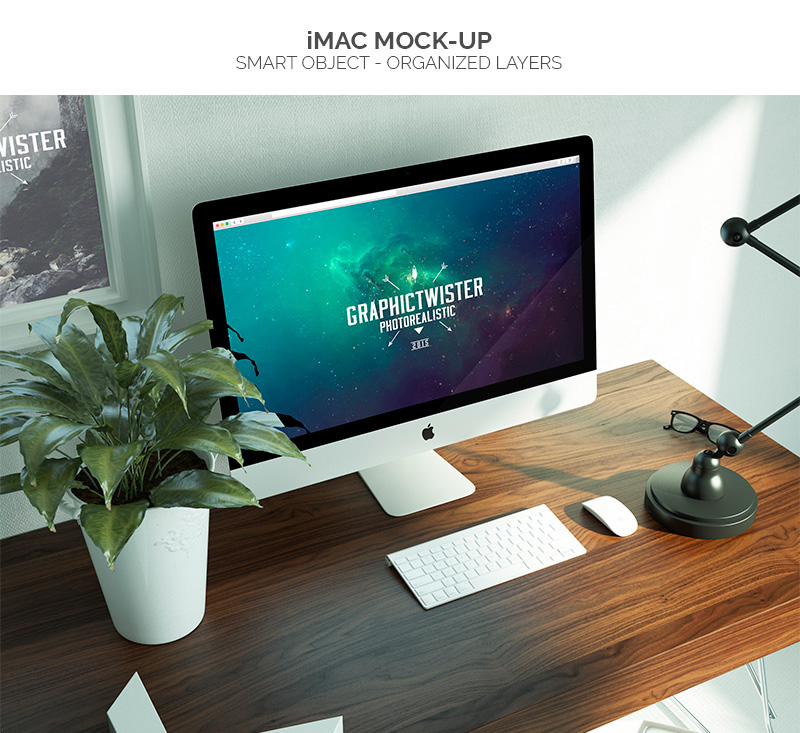
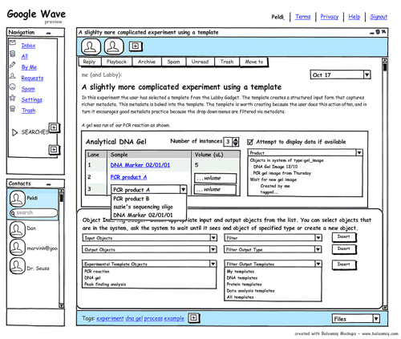
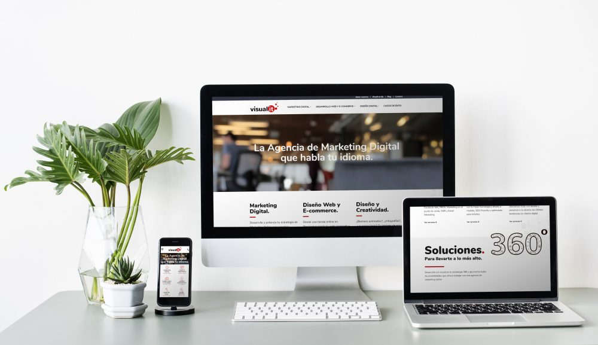

Un mockup es una maqueta digital o fotomontaje que pretende dar credibilidad a un diseño.
Esto se hace mostrando una imagen real del resultado. Se trata de diseños a escala real que vuelve la idea un poco más tangibles. Normalmente suelen ser archivos en formato .PSD (nativos de Adobe Photoshop).
Características:
- Las maquetas se utilizan en la fase inicial de desarrollo de webs y aplicaciones para la presentación y el control de calidad.
- Sirven para coordinar con el cliente las ideas y los requisitos de la interfaz de usuario con respecto a las funciones básicas, la navegación, la arquitectura de contenidos y el diseño.
- Se utilizan para pruebas de usabilidad sin un gran esfuerzo de programación previo. De este modo, cualquier problema se detecta antes de crear el prototipo y se reduce el riesgo de que un concepto tenga que ser completamente revisado a mitad de la fase de desarrollo.
Algunos Ejemplos:
  References: Mdirector · ryte · Images by Picture-1 · Picture-2 · Picture-3